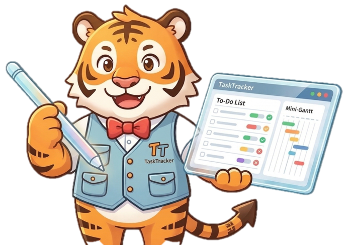

タスク・トラッくん
テーブルでタスク状況を可視化
使い方
① 表示・絞り込み
担当者
ステータス
優先度
期限
検索（タイトル/ID/担当者）
＋ 新規タスク
CSV出力
0件
② 集計
③ タスク一覧
ID
タイトル
担当
ステータス
優先度
期限
更新日
操作
更新は「編集」から行ってくれ！ 保存すれば即座にクラウドへ反映されるぞ。
タスク編集
閉じる
ID
新規の場合は自動採番
担当者
タイトル
ステータス
優先度
高
中
低
期限
更新者（actor）
イベントの actor に入る。自分の名前でOKだ！
コメント（任意）
保留理由（ステータスが「保留中」の場合は必須）
保存する
使い方（トラッくん）
クラウド同期版だ！
閉じる
「＋新規タスク」ボタンからタスクを作成してくれ。
作成・編集・ステータス変更した瞬間、自動的にクラウドへ保存されメンバー全員と共有されるぞ！
ステータスは一覧画面のバッジからも直接変更できる（インライン編集）。
データが必要なときは「CSV出力」ボタンで一覧結果をダウンロードして活用しよう。
任せろ！ まずは「+新規タスク」だ。
ひとつ作れば全部動き出すぞ！ 🐯
